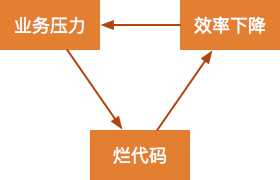
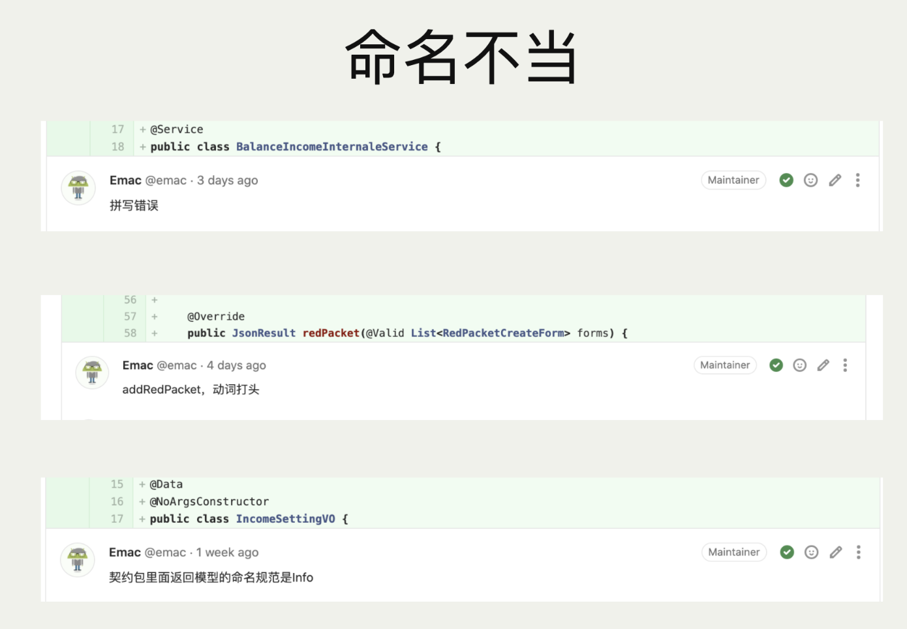
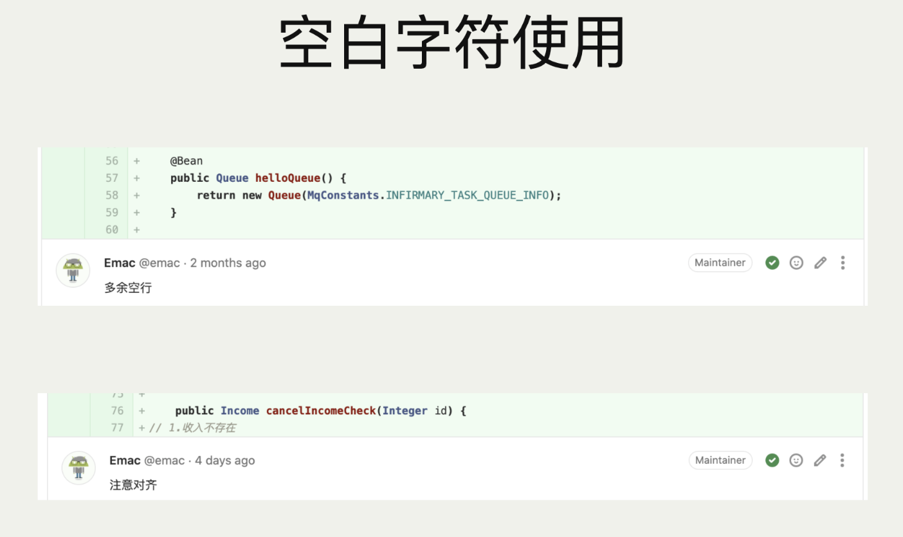
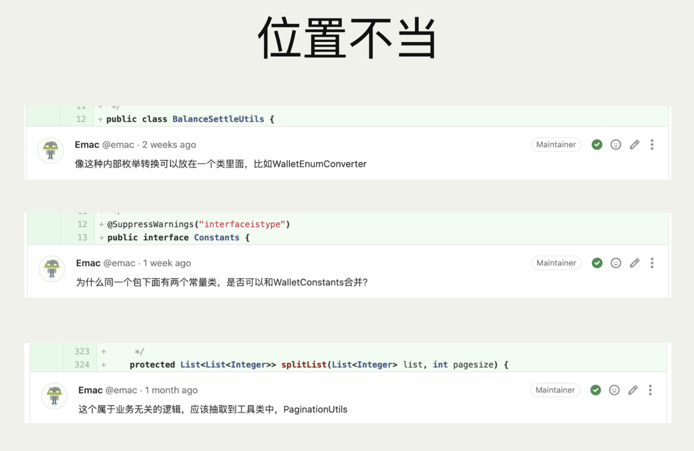
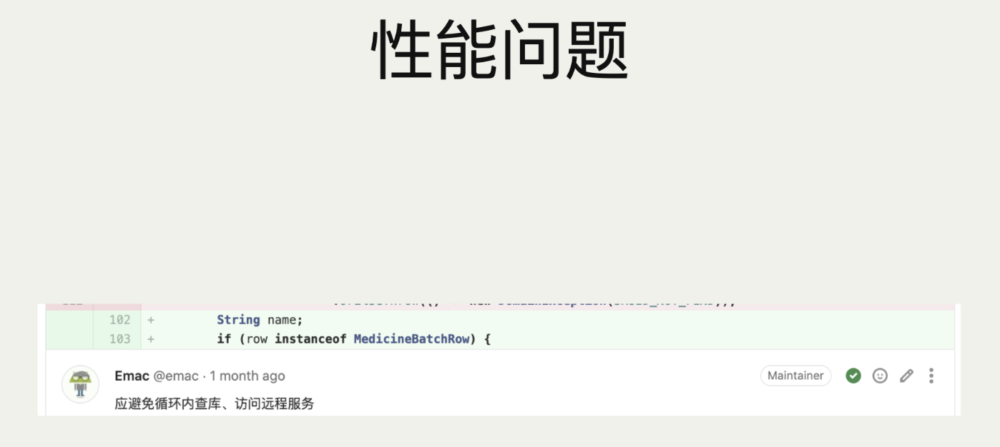
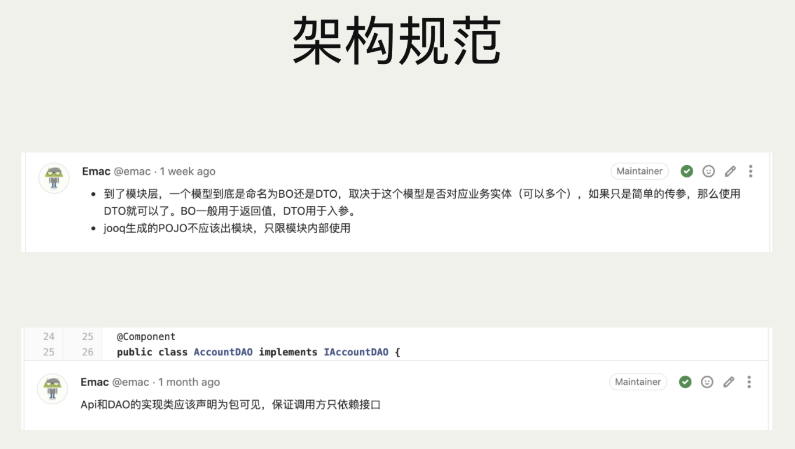
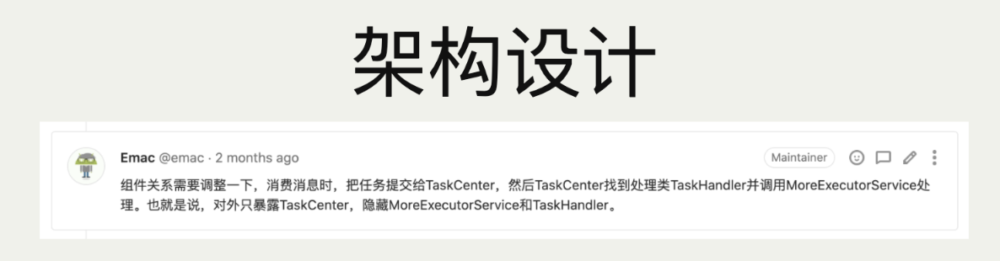
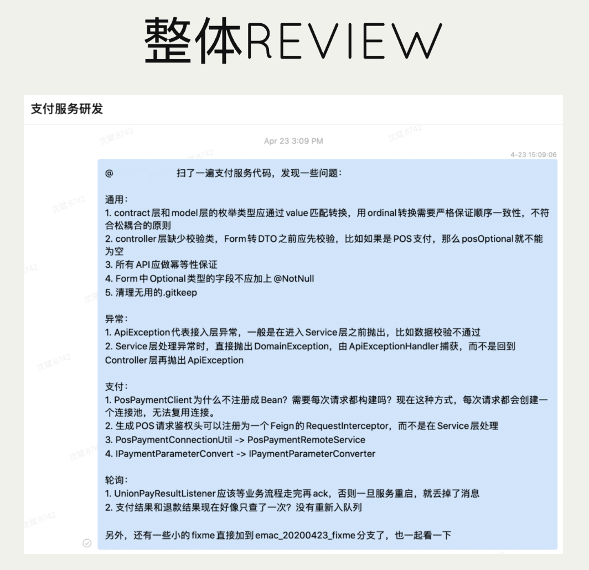

<!DOCTYPE HTML>
<html>
<head><meta name="generator" content="Hexo 3.9.0">
  <meta charset="utf-8">
  <meta http-equiv="X-UA-Compatible" content="IE=edge">
  <meta name="apple-mobile-web-app-capable" content="yes">
  <meta name="apple-mobile-web-app-status-bar-style" content="black">
  <meta name="google-site-verification" content>
  
  <title>代码评审赋魅</title>
  <meta name="author" content="Emac">
   <meta name="description" content="先来看一个令无数技术Leader闻风丧胆的项目“死亡”三角，业务压力引发代码质量下降，代码质量下降引发开发效率下降，开发效率下降又加重了业务压力，最终导致业务压力山大，乃至项目烂尾。如何破解？方法有很多，像精简业务需求、增加开发人手、升级技术架构等，很多时候需要多管齐下，但凡打掉这个“死亡”三角中的">
  

  <meta property="og:title" content="代码评审赋魅">
  <meta name="viewport" content="width=device-width, initial-scale=1, maximum-scale=1">
  <meta property="og:site_name" content="Emac">
 <meta property="og:image" content="undefined">
  
  <link href="/apple-touch-icon-precomposed.png" sizes="180x180" rel="apple-touch-icon-precomposed">
  <link rel="alternate" href="/atom.xml" title="Emac" type="application/atom+xml">
  <link rel="stylesheet" href="//cdn.bootcss.com/bootstrap/3.3.6/css/bootstrap.min.css">
  <link rel="stylesheet" href="//cdn.bootcss.com/font-awesome/4.5.0/css/font-awesome.min.css">
  <link rel="stylesheet" href="/css/m.min.css">
  <link rel="icon" type="image/x-icon" href="/favicon.ico">
</head>
</html>
<body>
  <div id='wx_pic' style='display:none;'></div>
  <div id="main">
    <div class="behind">
      <div class="back">
        <a href="/" class="black-color"><i class="fa fa-times" aria-hidden="true"></i></a>
      </div>
      <div class="description">
        &nbsp;拾贝
      </div>
    </div>
    <div class="container">
      

  <article class="standard post">
    <div class="title">
      
  
    <h1 class="page-title center">
        代码评审赋魅
    </h1>
  


    </div>
    <div class="meta center">
      
<time datetime="2020-09-19T16:00:00.000Z">
  <i class="fa fa-calendar"></i>&nbsp;
  2020-09-20
</time>


    
    &nbsp;
    <i class="fa fa-tag"></i>&nbsp;
    <a href="/categories/arch/">arch</a>


    
    &nbsp;
    <i class="fa fa-tag"></i>&nbsp;
    <a href="/tags/原创/">原创</a>·<a href="/tags/Code-Review/">Code Review</a>


    </div>
    <hr>
    <div class="picture-container">
      
    </div>
    <blockquote>
<p></p>
<p>先来看一个令无数技术Leader闻风丧胆的项目“死亡”三角，业务压力引发代码质量下降，代码质量下降引发开发效率下降，开发效率下降又加重了业务压力，最终导致业务压力山大，乃至项目烂尾。如何破解？方法有很多，像精简业务需求、增加开发人手、升级技术架构等，很多时候需要多管齐下，但凡打掉这个“死亡”三角中的任何一角，就能终止这个恶性循环，甚至逆转为良性循环。</p>
<p>代码评审（Code Revew，简称CR）的首要打击目标显然是“烂代码”。避免“烂代码”的最好时机是写代码的时候，其次是代码评审的时候。IBM 的 Orbit 项目有 50 万行代码，使用了 11 级的代码检查（其中包含代码评审），结果是项目提前交付，并且只有通常预期错误的 1%。一份对 AT＆T 的一个 200 多人组织的研究报告显示，在引入代码评审后，生产率提高了 14％，缺陷减少了 90％。那到底什么是代码评审？如何进行代码评审？继续往下看。</p>
</blockquote>
<h2 id="1-CR-祛魅"><a href="#1-CR-祛魅" class="headerlink" title="1 CR 祛魅"></a>1 CR 祛魅</h2><blockquote>
<p>我个人认为代码有这几种级别：1）可编译，2）可运行，3）可测试，4）可读，5）可维护，6）可重用。通过自动化测试的代码只能达到第3）级，而通过CODE REVIEW的代码少会在第4）级甚至更高。</p>
<p>—— 陈皓</p>
</blockquote>
<p>下面 8 条有关 CR 的阐述，你觉得哪些是正确的？</p>
<ol>
<li>搞形式主义，存粹是浪费时间</li>
<li>CR 是保证程序正确性的手段</li>
<li>CR 是保证代码规范的手段</li>
<li>CR 是 Leader 的事，跟我没关系</li>
<li>我只看指给我的 CR，其他 CR 跟我没关系</li>
<li>没有时间 CR，直接 Merge</li>
<li>CR 必须一行不落从头看到尾</li>
<li>CR 必须一次完成</li>
</ol>
<p>———————————————————————————————— 请仔细思考 60 秒</p>
<p>3…2…1…时间到，你的答案是几条？很抱歉，在我看来，没有一条是正确的。1、4、5、6 是送分题，显然都是错误的。7 是眉毛胡子一把抓，CR 就像读书，不是所有的书都适合精度，也不是所有的代码都需要评审。8 是任务心态，为了 CR 而 CR，CR 的目的不是完成 CR，而在于提升代码质量，你写代码时也不会一次完成所有功能。比较有争议的是 2 和 3，诚然，正确性和代码规范都是 CR 要关注的方面，但这并不意味着 CR 要保证正确性和代码规范（CR 也没法保证），保证正确性的主要手段是测试（单元测试，集成测试，契约测试，功能测试，自动化测试等），而保证代码规范主要依靠代码规范检查工具（像常用的 checkstyle 和 PMD）。</p>
<p></p>
<p>CR 到底是什么？依我所见，CR 本质上是一种讨论，一种严肃的、专业的、异步的以文字形式呈现的讨论，随意性和情绪化是 CR 的大忌。什么叫随意性？未经审视的评论。什么叫情绪化？因时而异，因人而异。高水平的 CR 首先要忘掉自己。</p>
<p></p>
<h2 id="2-知：CR-的三重境界"><a href="#2-知：CR-的三重境界" class="headerlink" title="2 知：CR 的三重境界"></a>2 知：CR 的三重境界</h2><p>技术水平决定了 CR 的下限，认知高度决定了 CR 的上限。所以说 CR 水平高不高，最终还是看认知水平。认识 CR 有三重境界，分别是执行层、团队层和文化层。</p>
<h3 id="2-1-执行层：昨夜西风凋碧树，独上高楼，望尽天涯路"><a href="#2-1-执行层：昨夜西风凋碧树，独上高楼，望尽天涯路" class="headerlink" title="2.1 执行层：昨夜西风凋碧树，独上高楼，望尽天涯路"></a>2.1 执行层：昨夜西风凋碧树，独上高楼，望尽天涯路</h3><p>第一层为执行层，顾名思义就是通过如何做来认识 CR。以下列举 CR 时需重点关注的六个方面，并辅以相应的例子便于理解。</p>
<p>1）关注<strong>代码规范</strong>。命名是第一位的，一个令人费解的命名背后往往隐藏着一个设计纰漏。其他诸如空白字符、换行、注释等问题，也会影响代码的可读性和可理解性。</p>
<p></p>
<p></p>
<p>2）避免<strong>重复代码</strong>。编程法则第一条，Don’t repeat yourself. 重复代码是万恶之首，重复代码人人得而诛之！</p>
<p></p>
<p>3）降低<strong>圈复杂度</strong>。什么是圈复杂度？简单来说就是代码中 if/case/for/while 出现的次数。圈复杂度越高，BUG 率越高。如果一个方法的圈复杂度达到 3 或者更高，那么 CR 时就要多看两眼。</p>
<p>4）关注<strong>性能问题</strong>。性能问题虽然不常见，可一旦暴雷往往就是大问题。CR 时看到循环，记得多留一个心眼。</p>
<p></p>
<p>5）关注<strong>分布式事务</strong>。涉及远程服务调用，或者跨库更新的场景，都应考虑是否存在分布式事务问题，以及适用何种处理方式，是依赖框架保证强一致性，还是记录异常数据保证最终一致性，抑或是直接忽略？</p>
<p>6）关注<strong>架构设计</strong>。代码有代码规范，架构有架构规范。面对一个新功能的 MR（Merge Request），除了检查架构规范，还应推敲其架构设计，比如是否符合整洁架构三原则，无依赖环原则，稳定依赖原则，稳定抽象原则。</p>
<p></p>
<p></p>
<p>除了线上 CR，还有一种特殊的线下 CR 方法，就是跳过 MR，直接拉取代码，进行整体 CR，将评审意见在代码中标记为 <code>TODO</code> 或者 <code>FIXME</code>，然后 @ 相关开发进行改进。这样做最大的好处，就是避免受单个 MR 的影响，掉入只见树木不见森林的陷阱。</p>
<p></p>
<h3 id="2-2-团队层：衣带渐宽终不悔，为伊消得人憔悴"><a href="#2-2-团队层：衣带渐宽终不悔，为伊消得人憔悴" class="headerlink" title="2.2 团队层：衣带渐宽终不悔，为伊消得人憔悴"></a>2.2 团队层：衣带渐宽终不悔，为伊消得人憔悴</h3><p>接下来再看第二层，如何从团队视角认识 CR。前面说了，CR 本质上是一种讨论，培根说过「读书使人完整，讨论使人完备」，从个人到团队，CR 分别意味着什么？</p>
<ul>
<li><p>提升<strong>自我觉察</strong>能力：这是从个人视角来看，当你知道你写的代码会有另一双眼睛来审阅，那你写代码时就会保持一份警觉，放弃天知、地知、我知、你不知的幻想，认认真真写好每一行代码。</p>
</li>
<li><p>建立良好<strong>开发节奏</strong>：这是从团队视角来看，CR 是团队的同步器，每个人既是自己 MR 的作者，又是别人 MR 的评审者，从 MR 到 CR，再从 CR 到 MR，构成了每个工作日最动听的乐章。</p>
</li>
<li><p>高频次的<strong>团队活动</strong>：这也是从团队视角来看，CR 既然是讨论，那么就不仅仅是一个人的事，而是一种团队活动，一种高频次、高质量、低成本的极具性价比的团队活动。</p>
</li>
</ul>
<h3 id="2-3-文化层：众里寻他千百度，蓦然回首，那人却在，灯火阑珊处"><a href="#2-3-文化层：众里寻他千百度，蓦然回首，那人却在，灯火阑珊处" class="headerlink" title="2.3 文化层：众里寻他千百度，蓦然回首，那人却在，灯火阑珊处"></a>2.3 文化层：众里寻他千百度，蓦然回首，那人却在，灯火阑珊处</h3><p>最后是文化层，CR 既是传帮带文化的重要组成，又是工程师文化的日常体现。</p>
<ul>
<li><p><strong>传帮带文化</strong>的重要组成：资深工程师 CR 初级工程师的代码，可以给予高频次、高质量的指导；初级工程师 CR 资深工程师的代码，可以欣赏、学习高手如何把玩代码，取其精华去其糟粕。</p>
</li>
<li><p><strong>工程师文化</strong>的日常体现：协作、高效、进取、影响力，这些在各大互联网公司的工程师文化中频频出现的关键词，无一不与 CR 紧密相连。不夸张的说，工程师文化香不香，就看 CR 做的好不好。</p>
</li>
</ul>
<h2 id="3-行：CR-高效之法"><a href="#3-行：CR-高效之法" class="headerlink" title="3 行：CR 高效之法"></a>3 行：CR 高效之法</h2><p>认识完 CR，我们再来探讨一下如何高效的进行 CR。在我看来，高效 CR 首先有赖于以下几个客观条件和主观条件。</p>
<p>客观上来看，<strong>和谐的工程师文化</strong>和<strong>清晰的代码规范</strong>是高效 CR 的两块基石。所谓和谐的工程师文化，就是说团队对代码秉持开放的心态，不藏着掖着，以写好代码为荣，以写坏代码为耻，持续关注代码质量。而清晰的代码规范，一方面提高了代码的可读性，另一方面也统一了编码风格，极大的减少了不同代码风格对评审者注意力的干扰。</p>
<p>主观上来看，对评审者而言，第一要端正态度，<strong>保持谦卑的心态</strong>，人非圣贤孰能无过，择其善者而从之，其不善者而改之。第二要谨记<strong>评审的对象是代码，而不是人</strong>，你写下的每一条评审意见都应基于客观事实和数据，做到有理有据，不带个人情绪。</p>
<p>基于我多年 CR 的实操经验，结合<a href="https://github.com/google/eng-practices/blob/master/review/index.md" target="_blank" rel="noopener">Google Code Review Developer Guide</a>，我整理了一些高效 CR 的最佳实践，供你参考：</p>
<ul>
<li>依据个人偏好每天固定几个时间段专门用于 CR，我的习惯是出门前和下班前。CR 耗费的脑力丝毫不亚于编码，甚至更高，CR 过程中需要高度集中注意力。清醒的头脑和无干扰的环境，是提出高质量的评审意见的秘诀。</li>
<li>除了固定时间段，任务切换期间也是 CR 的好时机。</li>
<li>每次 CR 尽量控制在 15~30 分钟以内，超过 30 分钟应休息一会。</li>
<li>收到 MR 之后，先判断一下 MR 的性质，如果是 Bug Fix 类型的 MR，应尽快评审，如果是新功能 MR，则可以等待下一个 CR 窗口。</li>
<li>从收到 MR 到 CR 结束，最长不要超过 1 个工作日。</li>
<li>开始 CR 之前先要搞清楚 MR 要解决的问题背景。</li>
<li>CR 就像读书，先看目录（改动的文件列表），再精读重点章节（包含核心业务逻辑的代码），最后扫读剩余章节。</li>
<li>如果改动的文件数量较多，可以打开 IDE，切换到源分支，方便在 CR 过程中随时打开相关代码进行阅读。</li>
<li>评审核心代码时，如果发现严重问题，应立刻终止 CR，找 MR 提交者当面讨论。</li>
<li>如果 MR 提交者对评审意见提出异议，评审者应找提交者当面讨论，避免在评论区互踢皮球。</li>
<li>合并代码之前应确保所有评审意见都被妥善处理。</li>
<li>记得点赞。CR 不是只能提意见，看到优雅的代码不要吝啬你的表扬。</li>
</ul>
<h2 id="4-小结"><a href="#4-小结" class="headerlink" title="4 小结"></a>4 小结</h2><p>2019 年 Stack Overflow 的一份<a href="https://insights.stackoverflow.com/survey/2019" target="_blank" rel="noopener">调查报告</a>显示，超过 7 成的程序员会把 CR 当做日常工作的一部分，近 1/3 的程序员每周在 CR 上花费 2~3 个小时，还有 1/3 的程序员每周花费 4~5 个小时。心里默默算一下，你是在拖后腿还是领路者？如果你还没做过 CR，那么赶紧行动起来；如果你已经在 CR，很好，请继续保持。一花一世界，一叶一菩提，码中自有乾坤。CR，走起！</p>
<h2 id="5-参考"><a href="#5-参考" class="headerlink" title="5 参考"></a>5 参考</h2><ul>
<li><a href="https://slides.com/emacooshen/codereview2" target="_blank" rel="noopener">如何完成一次高质量的CODE REVIEW?（2020版）</a></li>
<li><a href="https://coolshell.cn/articles/1302.html" target="_blank" rel="noopener">陈皓：CODE REVIEW中的几个提示</a></li>
<li><a href="https://coolshell.cn/articles/11432.html" target="_blank" rel="noopener">陈皓：从CODE REVIEW 谈如何做技术</a></li>
<li><a href="https://www.techug.com/post/effective-code-reviews.html" target="_blank" rel="noopener">如何做有效的代码审查？我有这些建议</a></li>
</ul>


  </article>
  </script>


    </div>
  </div>
  <footer class="page-footer"><div class="clearfix">
</div>
<div class="right-foot container">
    <div class="firstrow">
        <a href="#top" >
        <i class="fa fa-arrow-right"></i>
        </a>
        © emacoo.cn 2015-2024
    </div>
    <div class="secondrow">
        <a href="https://github.com/gaoryrt/hexo-theme-pln">
        
        </a>
    </div>
</div>
<div class="clearfix">
</div>
<script async src="//busuanzi.ibruce.info/busuanzi/2.3/busuanzi.pure.mini.js"></script>
<div class="busuanzi center">
    <span id="busuanzi_container_site_pv">本站总访问量<span id="busuanzi_value_site_pv"></span>次</span>
    <span id="busuanzi_container_site_uv">本站访客数<span id="busuanzi_value_site_uv"></span>人次</span>
    <span id="busuanzi_container_page_pv">
      本文总阅读量<span id="busuanzi_value_page_pv"></span>次
    </span>
</div>
</footer>
  <script src="//cdn.bootcss.com/jquery/2.2.1/jquery.min.js"></script>
<script src="/js/search.js"></script>
<script type="text/javascript">

// comments below to disable loading animation
function revealOnScroll() {
  var scrolled = $(window).scrollTop();
  $(".excerpt, .index-title, .index-meta, p").each(function() {
    var current = $(this),
      height = $(window).outerHeight(),
      offsetTop = current.offset().top;
    (scrolled + height + 50 > offsetTop) ? current.addClass("animation"):'';
  });
}
$(window).on("scroll", revealOnScroll);
$(document).ready(revealOnScroll)

// disqus scripts


// dropdown scripts
$(".dropdown").click(function(event) {
  var current = $(this);
  event.stopPropagation();
  $(current).children(".dropdown-content")[($(current).children(".dropdown-content").hasClass("open"))?'removeClass':'addClass']("open")
});
$(document).click(function(){
    $(".dropdown-content").removeClass("open");
})

// back to top scripts
$("a[href='#top']").click(function() {
  $("html, body").animate({ scrollTop: 0 }, 500);
  return false;
});


var path = "/search.xml";
searchFunc(path, 'local-search-input', 'local-search-result');

</script>

</body>
</html>
